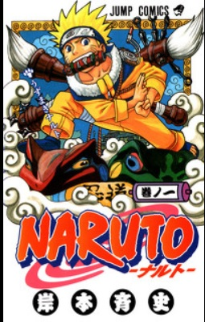
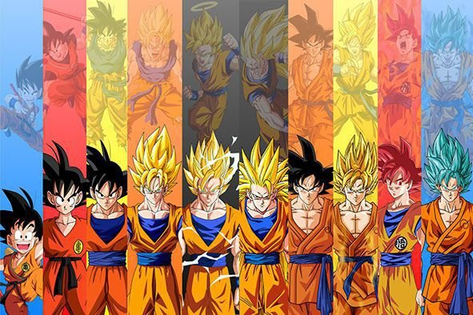
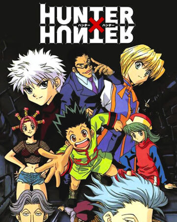

Animes
Naruto
 <Naruto (ナルト?) é uma série de mangá escrita e ilustrada por Masashi Kishimoto, que conta a história de Naruto Uzumaki, um jovem ninja que constantemente procura por reconhecimento e sonha em se tornar Hokage, o ninja líder de sua vila. A história é dividida em duas partes, a primeira parte se passa nos anos da pré-adolescência de Naruto, e a segunda parte se passa em sua adolescência. A série é baseada em dois mangás one-shots de Kishimoto: Karakuri (1995), e que por causa dele Kishimoto ganhou uma menção honrosa no prêmio Hop Step da Shueisha no ano seguinte, e Naruto (1997). A editora Panini Comics licenciou e publicou o mangá em três versões no Brasil, e em Portugal é a editora Devir Manga quem licencia e publica o mangá. A história de Naruto continua com o seu filho, Boruto Uzumaki em Boruto: Naruto Next Generations.
Os capítulos de Naruto foram publicados na revista Weekly Shōnen Jump de 1999 a 2014, com estes capítulos compilados e publicados em 72 volumes tankōbon pela editora Shueisha. O mangá foi adaptado para uma série de anime produzida pelo Studio Pierrot e Aniplex, que teve os seus 220 episódios transmitidos pela TV Tokyo no Japão de 2002 a 2007; a adaptação brasileira da série foi exibida na Cartoon Network e no SBT, e atualmente é exibido nos serviços de streaming Crunchyroll, Netflix e Claro Vídeo. Já a adaptação portuguesa da série foi exibida na SIC Radical, SIC, SIC K e no Animax Portugal. Naruto Shippuden, a sequência da série original, estreou no Japão em 2007 e terminou em 2017, após 500 episódios. A adaptação brasileira foi exibida na PlayTV em 2015 a 2017, e atualmente é exibida nos serviços de streaming Crunchyroll, Netflix e Claro Vídeo. Além da série de anime, o Studio Pierrot desenvolveu onze filmes e vários OVAs. No Brasil, alguns filmes foram licenciados e exibidos dublados no país pela Viz Media. Outros produtos relacionados a Naruto como light novels, jogos eletrônicos, e cartas colecionáveis foram desenvolvidos por várias empresas.
A partir de 2017, Naruto se tornou a terceira série de mangá mais vendida na história, vendendo mais de 220 milhões de cópias em todo o mundo, onde foi publicado em 35 países fora do Japão. Os críticos elogiaram o enredo, desenvolvimento de personagens, e as cenas de luta do mangá. Os críticos também observaram que o mangá, que tem uma história coming-of-age, faz uso de referências culturais da mitologia japonesa e do confucionismo.
Dragon ball Z
Dragon Ball Z (ドラゴンボールZ Doragon Bōru Zetto?) (geralmente abreviado como DBZ) foi uma série de animação produzida pela Toei Animation. Baseada na série de mangá Dragon Ball escrita por Akira Toriyama, Dragon Ball Z corresponde aos volumes 17 ao 42 do mangá que foi publicado na revista , Weekly Shonen Jump, de 1988 a 1995, e estreou no Japão na Fuji TV em 26 de Abril de 1989, e terminou dia 31 de Janeiro de 1996 com o total de 291 episódios,[4] antes de ser dublada em diversos territórios ao redor do globo, incluindo Estados Unidos, Austrália, Europa, Índia e América Latina. A série já foi exibida em mais de 80 países ao redor do mundo.[5]
O sucesso da série Dragon Ball levou à criação da continuação, Dragon Ball Z, sendo um dos animes mais conhecidos de todos os tempos. Esta série aparece recheada de longos combates com muita ação. Em Dragon Ball Z, as histórias possuem um clima mais sério que as de seu antecessor. Substituíram a comédia, mas o humor ainda existe em muitas partes da série. Possui vários episódios em que o suspense é entrelaçado aos acontecimentos que primeiramente não parecem ter grande relevância, ou de fatos despercebidos e revelados com maiores detalhes no auge de tal acontecimento.
Foi lançado o primeiro BOX com 4 DVDs de Dragon Ball Z em Agosto de 2012, sendo a primeira vez que o anime é distribuído oficialmente em home vídeo no Brasil pelo Grupo PlayArte. Atualmente está no 3° box com 52 episódios já lançados.
A popularidade da Dragon Ball Z gerou numerosos lançamentos que representaram a maioria dos conteúdos no universo da Dragon Ball; incluindo 17 filmes e 148 jogos de vídeo, muitos deles sendo lançados apenas no Japão, e uma série de trilhas sonoras provenientes desse material. Dragon Ball Z continua a ser um ícone cultural através de inúmeras adaptações, incluindo uma transmissão remasterizada mais recente, intitulada Dragon Ball Kai.
One piece

One Piece (ワンピース Wan Pīsu?) é uma série de mangá escrita e ilustrada por Eiichiro Oda. Os capítulos têm sido serializados na revista Weekly Shōnen Jump desde 22 de julho de 1997, com os capítulos compilados e publicados em 96 volumes tankōbon pela editora Shueisha até abril de 2020. One Piece conta as aventuras de Monkey D. Luffy, um jovem cujo corpo ganhou as propriedades de borracha após ter comido uma fruta do diabo acidentalmente. Com sua tripulação, os Piratas do Chapéu de Palha, Luffy explora a Grand Line em busca do tesouro mais procurado do mundo, o "One Piece", a fim de se tornar o próximo Rei dos Piratas.
O mangá foi adaptado em um episódio OVA produzido pela Production I.G em 1998, e num anime produzido pela Toei Animation, transmitido no Japão desde 1999. Além disso, a Toei Animation produziu catorze filmes de anime, um OVA e treze episódios especiais de televisão. Foram lançadas também vários tipos de mídias desenvolvidas por diversas empresas relacionadas à série, como um jogo de cartas colecionável, e vários jogos eletrônicos. A série de mangá é licenciada e publicada no Brasil pela editora Panini Comics. A série de anime já foi exibida no Brasil, e em Portugal. Atualmente a série é transmitida simultaneamente pela Crunchyroll no Brasil e será transmitida pelo Netflix com uma nova dublagem.[1][2] ´
One Piece recebeu elogios pelo seu enredo, arte, humor e caracterização. Vários volumes do mangá quebraram recordes de publicação, incluindo a maior tiragem inicial de qualquer livro no Japão. O sítio oficial da série anunciou que o mangá estabeleceu um recorde mundial como "a série de quadrinhos de um mesmo autor com mais cópias publicadas no mundo". Até maio de 2020, o mangá já tinha vendido mais de 473 milhões de cópias em todo o mundo, sendo a série de mangá mais vendida da história. Foi a série de mangá mais vendida pelo décimo primeiro ano consecutivo em 2018. One Piece é uma das franquias de mídia com maior bilheteria de todos os tempos, estima-se que tenha gerado mais de 21 bilhões de dólares em receita total de franquia, a partir de mangás, animes e filmes, jogos e mercadorias.[3]
Hunter x Hunter
Hunter × Hunter (ハンター×ハンター Hantā × Hantā?, estilizado como HUNTER×HUNTER) é uma série de mangá escrita e ilustrada por Yoshihiro Togashi. Os capítulos são serializados na revista Weekly Shōnen Jump desde 3 de março de 1998, onde são compilados e publicados em formato tankobon pela editora Shueisha, embora o mangá tenha frequentemente entrado em hiato desde 2006. A história tem como protagonista Gon Freecss, um menino de 12 anos que quer encontrar o seu pai a todo o custo, então ele decide se tornar um "Hunter", assim como ele, e de alguma forma encontrar o seu paradeiro. À medida que a história avança, Gon faz amizade com outros três Hunters aspirantes: Leorio, Kurapika e Killua, que o acompanham em suas aventuras. No Brasil, o mangá é licenciado e publicado pela editora JBC desde 2008.
Em 1998, o estúdio Pierrot lançou um OVA que resume os primeiros capítulos do mangá, esse piloto OVA é bastante desconhecido para o público em geral. Em 1999, a história de Hunter × Hunter é novamente adaptada, porém, em uma série de anime de 62 episódios, produzida pela Nippon Animation e dirigida por Kazuhiro Furuhashi. A série estreou no Japão em 2001 na Fuji TV. Três séries OVAs totalizando 30 episódios que adapta o arco de Greed Island foram subsequentemente produzidos pela Nippon Animation e lançados no Japão em 2002 até 2004. No Brasil, o anime foi dublado e estreou em 2005 pelo extinto canal pago Animax e mais tarde em 2007 pelo canal aberto RedeTV!, no bloco TV Kids. Em Portugal, foi exibido legendado pelo Animax local em 2008. Um segundo anime remake produzido pela Madhouse que contou com uma nova equipe de produção e um novo elenco de seiyus, foi ao ar em outubro de 2011 até setembro de 2014, e adaptou a história do mangá desde o primeiro capítulo até o capítulo 339, existe também dois filmes de anime que foram lançados em 2013. Há também inúmeros álbuns de áudio, jogos eletrônicos, musicais, e outras mídias baseadas em Hunter × Hunter que foram lançadas.
Hunter × Hunter tem sido um enorme sucesso de crítica e comercial e se tornou uma das séries de mangá mais vendida da Shueisha, tendo vendido 66 milhões de cópias apenas no Japão a partir de 2014.